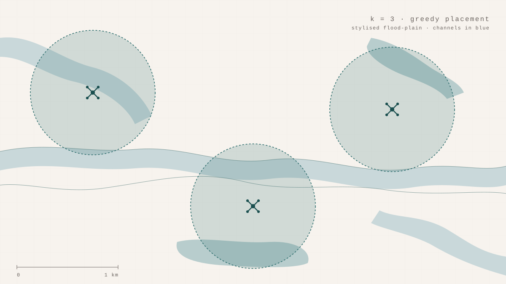

The Kerala backwaters look like a forest, but only on a map. From the air during the 2018 floods they looked like a maze, the navigable channels and the impassable ones running together at the same elevation, separated only by the difference between water and land. When the cellular network goes down, the question of where to put a small fleet of drones to restore Wi-Fi becomes a question about that geometry.
Three placement strategies for three to eight drone-mounted hotspots over a five-by-five kilometre sector. Random, as a baseline. Greedy incremental, which places drones one at a time, each at the spot that adds the most newly-covered ground. K-means centroid, which clusters accessible cells and places one drone at the centre of each. All three are computationally trivial. The question is whether the cleverer two beat the baseline by enough to matter, and whether they beat it on real terrain or only on the kind of flat plain that simulations gravitate to by default.
On a flat synthetic grid, the three strategies converge. Greedy and centroid each gain about 1.2 percentage points over random — a real but small effect. On Kuttanad, the Kerala flood plain reconstructed from SRTM elevation data, the comparison breaks open. At three drones, greedy delivers 25.3% coverage. Random delivers 14.9%. Centroid delivers 14.1%. The gap is ten percentage points, and a Wilcoxon signed-rank test on ten trials per configuration places it well clear of noise.
The structural reason matters more than the number. Kuttanad is not just terrain with obstacles; it is terrain in which the obstacles — river channels, backwater inlets, flooded zones — fragment the accessible space into non-convex pockets. Greedy walks into each pocket one drone at a time, planting a hotspot where the largest newly-accessible bay is. K-means does the wrong thing for the right reason: it minimises within-cluster variance, treating the accessible cells as a uniform field and placing centroids to balance area. The geometry of the floodplain is invisible to it. The geometry is what greedy is exploiting.
That asymmetry inverts on the overlap metric. Centroid placement produces near-zero coverage redundancy across every terrain type tested — k-means tiles the space with non-overlapping Voronoi cells, so fleet-hours are never wasted on duplicate coverage. That matters when battery life is the binding constraint. There is no single winning strategy. There is a coverage-maximising strategy on structured terrain, and a redundancy-minimising strategy everywhere, and the choice between them depends on whether the binding constraint that day is reach or hover time.
What I take from this is something the title gestures at. Infrastructure is a way of imposing shape on a landscape. When it fails, the landscape's own shape becomes the relevant geometry. A greedy algorithm with no notion of geography reads that geometry through the data; a centroid algorithm with cleaner mathematical guarantees cannot. The cleverness is not in the simulator. It is in noticing which kind of cleverness the terrain rewards.